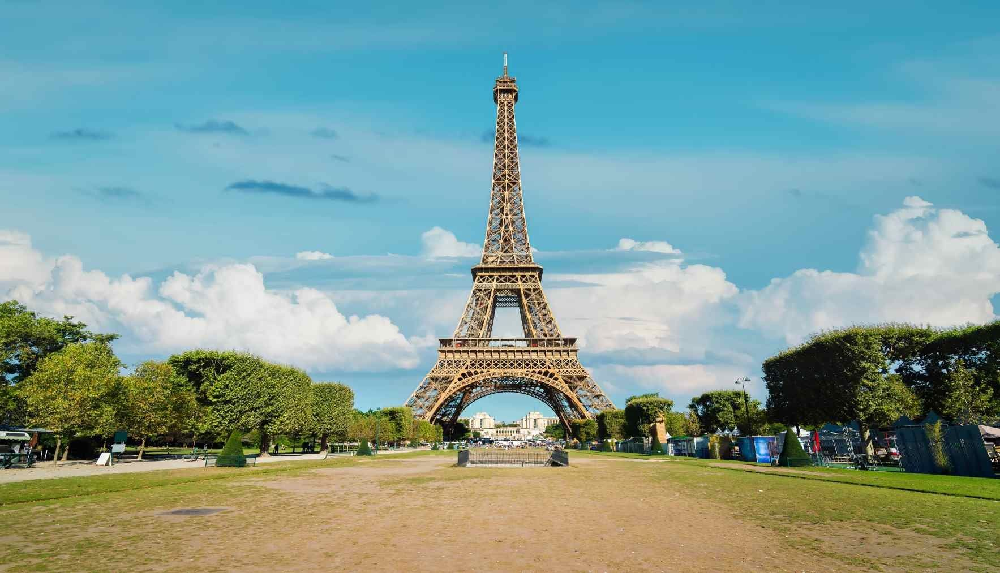
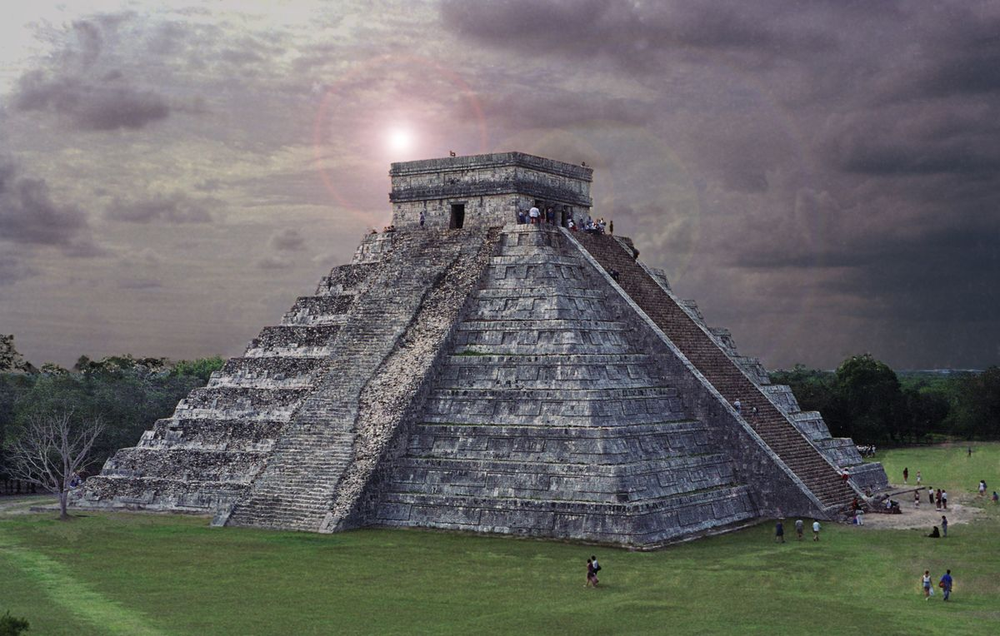
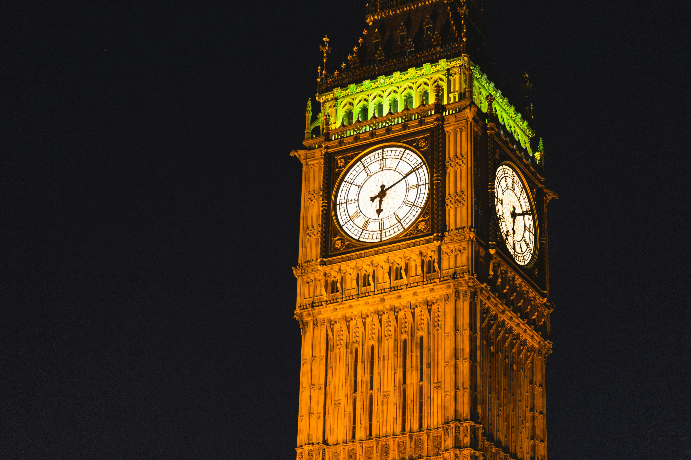
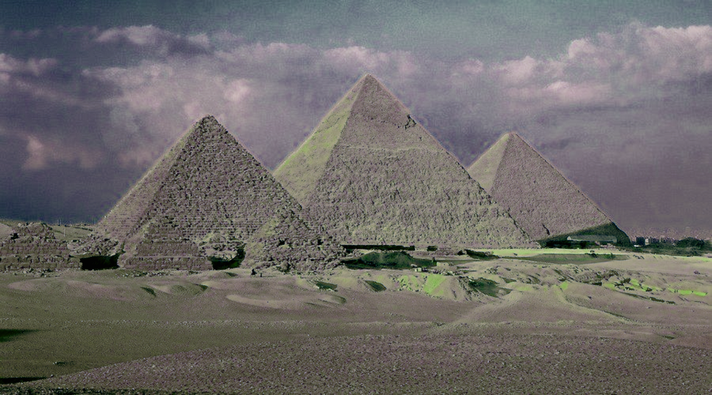
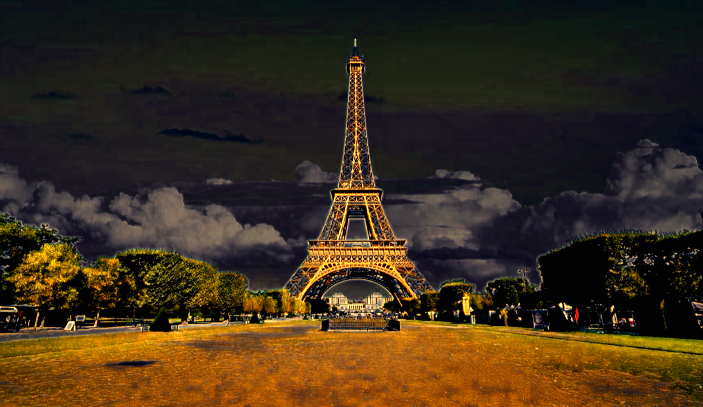

Abstract
Photorealistic image stylization involves transferring the style of a reference photo to a content photo while ensuring the result remains photorealistic. This project implements the method proposed in the paper "A Closed-form Solution to Photorealistic Image Stylization", featuring a two-step process:
- Stylization Step: Whitening and Coloring Transforms (WCT)
- Smoothing Step: Manifold ranking algorithm to preserve spatial consistency
Key Features
- End-to-end model, stylizes 1024×1024 images in 4.7 seconds
- Maintains photorealistic textures and structures
- Handles transformations like day-to-night or season changes
- Stable video stylization across frames
Results


Content
+


Style
→


Output
Implementation Details
- Framework: PyTorch
- Techniques: WCT, wavelet transforms
- Performance: Real-time stylization of high-res images
Resources
Contact
For questions or collaborations, feel free to reach out:
Email: khaled.gad@ejust.eud.eg
Email: steven.yakoub@ejust.edu.eg
Email: anas.awadallah@ejust.edu.eg
GitHub: Vision Final Project